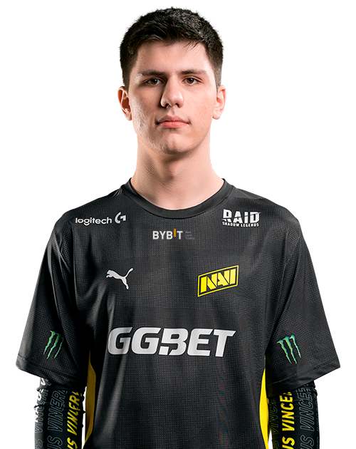

Весной прошлого года украинский клуб открыл проект NAVI Esports Camp, который стал основой для молодёжной команды по CS:GO. В середине июня «рожденные побеждать» объявили имена десяти участников, лучшие из которых прошли в состав NAVI Junior.
Среди них оказался и B1T cfg, который выступает за «молодежку» Natus Vincere более года – Валерий выходил в закрытые отборочные к EPICENTER, занимал призовые места на онлайн-турнирах уровня CTRL PLAY LEAGUE и SECTOR: MOSTBET.
Многие фанаты хотят знать настройки s1mple, s1mple settings, s1mple cfg, а также s1mple steam и s1mple faceit.
B1T изначально выглядел одним из самых перспективных игроков NAVI Junior, а в течение года доказал этот статус на деле. Вместе с тем кураторы проекта отмечали, что у игрока есть проблемы с дисциплиной и легкомыслием.
Там он проспал, там он не убрал за собой. Везде, где что-то подобное происходило, Дебют B1t за основу «Рожденных Побеждать» выдался немного скомканным. У electonic в матче против Heroic вылетел интернет, и на пару раундов залетел B1t. Он сделал три фрага, два раза погиб и закончил карту с рейтингом 1.10. Своего следующего матча за NAVI B1t ждал три месяца. Он был заигран в рамках BLAST Premier Fall 2020 Finals в качестве шестого игрока в матче против Astralis. «Рожденные Побеждать» проиграли ту карту 14:16, а Валерий закончил игру на последнем месте.
обязательно участвовал Валера. Более того, он был постоянным источником вот таких вот «приколов».

 NAVI не зря отмечали высокий скилл игрока. B1T выделяется на фоне тиммейтов со средним рейтингом HLTV 1.14. Валерий имеет 70% хэдшотов и часто входит в различные топы по статистике на онлайн-турнирах. Специалисты считают, что шанс проявить себя в основе молодой игрок заслужил.
Кстати, одна такая возможность у B1T cs go уже была. В сентябрьском матче ESL Pro League Season 12 против Heroic у electronic возникли технические проблемы, и вместо него несколько раундов провел Валерий. Вскоре Денис вернулся, и команда довела матч до победы.
Многие фанаты хотят знать конфиг b1t, b1t settings, b1t cfg, а также b1t steam и b1t faceit.
Сразу после анонса Валерий дебютировал в составе NAVI в качестве шестого игрока. Матч против Astralis на Inferno закончился победой датчан 16:14, а B1t стал худшим игроком на карте со статистикой 13-2-24 и рейтингом HLTV 0.62. Он часто умирал первым, проигрывал позицию и, по мнению многих, достойно заменить flamie так и не смог.
Было видно, что Ваховский сильно волновался по ходу матча – учитывая его возраст и важность матча, это можно понять. Однако эту проблему и самому B1t, и клубу NAVI неизбежно придется решать, если «рожденные побеждать» рассматривают украинского игрока как полноценную замену одного из участников на определенных картах. Вернее, судя по инсайдам – на одной карте.
Первым серьёзным достижением B1t cs go стала победа в открытой квалификации CIS Minor Championship — Berlin 2019 с командой NOTBAD.
Затем Валерий принял участие в проекте NAVI Esports Camp: он демонстрировал отличную игру и одним из первых получил приглашение в NAVI Junior.
В начале 2021 года B1t стал шестым игроком команды Natus Vincere по CS:GO: обычно он заменяет flamie на Inferno.
NAVI не зря отмечали высокий скилл игрока. B1T выделяется на фоне тиммейтов со средним рейтингом HLTV 1.14. Валерий имеет 70% хэдшотов и часто входит в различные топы по статистике на онлайн-турнирах. Специалисты считают, что шанс проявить себя в основе молодой игрок заслужил.
Кстати, одна такая возможность у B1T cs go уже была. В сентябрьском матче ESL Pro League Season 12 против Heroic у electronic возникли технические проблемы, и вместо него несколько раундов провел Валерий. Вскоре Денис вернулся, и команда довела матч до победы.
Многие фанаты хотят знать конфиг b1t, b1t settings, b1t cfg, а также b1t steam и b1t faceit.
Сразу после анонса Валерий дебютировал в составе NAVI в качестве шестого игрока. Матч против Astralis на Inferno закончился победой датчан 16:14, а B1t стал худшим игроком на карте со статистикой 13-2-24 и рейтингом HLTV 0.62. Он часто умирал первым, проигрывал позицию и, по мнению многих, достойно заменить flamie так и не смог.
Было видно, что Ваховский сильно волновался по ходу матча – учитывая его возраст и важность матча, это можно понять. Однако эту проблему и самому B1t, и клубу NAVI неизбежно придется решать, если «рожденные побеждать» рассматривают украинского игрока как полноценную замену одного из участников на определенных картах. Вернее, судя по инсайдам – на одной карте.
Первым серьёзным достижением B1t cs go стала победа в открытой квалификации CIS Minor Championship — Berlin 2019 с командой NOTBAD.
Затем Валерий принял участие в проекте NAVI Esports Camp: он демонстрировал отличную игру и одним из первых получил приглашение в NAVI Junior.
В начале 2021 года B1t стал шестым игроком команды Natus Vincere по CS:GO: обычно он заменяет flamie на Inferno.

Дополнительная информация:
|